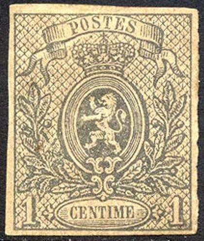
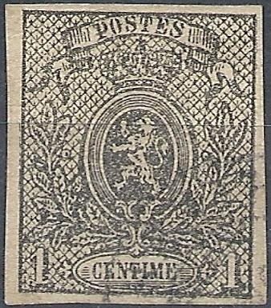
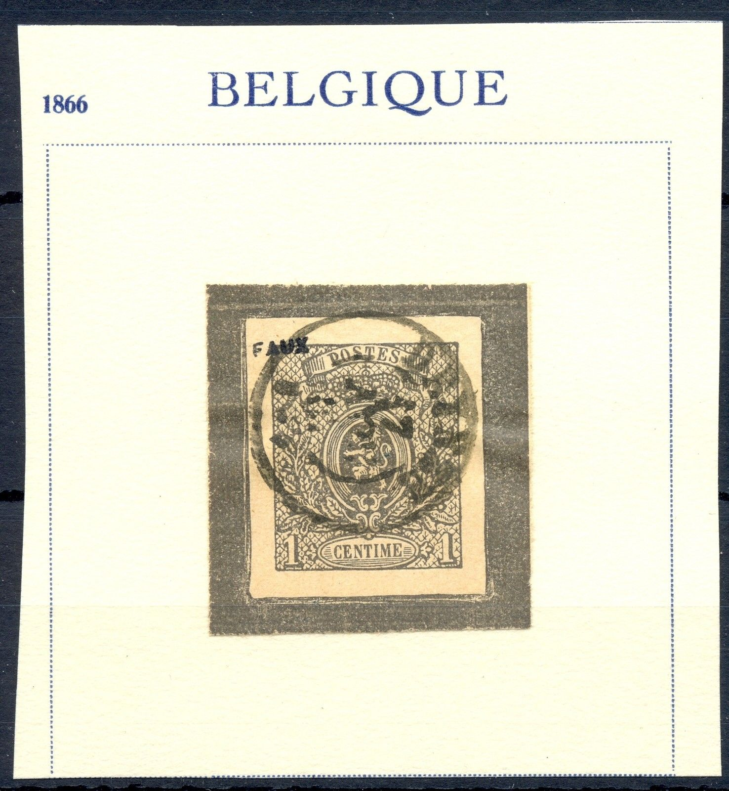
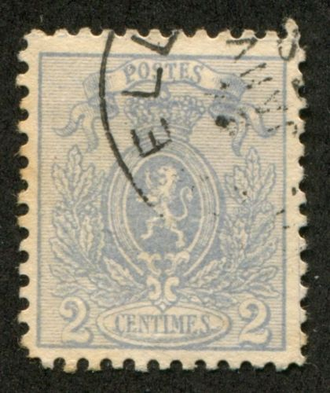
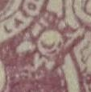

Return To Catalogue - Belgium 1849-1865, King Leopold - 1869-1892 - 1893-1911 - 1912 Arms and King Albert issue - 1915 onwards - Belgian Congo 1886-1893 - Belgian Congo 1894-1908 - Belgian Congo 1909-1920 and miscellaneous- Due, Telegraph, Telephone stamps and proofs - Fiscal, Railway, Postal Stationary and Miscellaneous - Moens (philatelic dealer)
Currency: 100 Centimes = 1 Franc
Note: on my website many of the
pictures can not be seen! They are of course present in the
catalogue;
contact me if you want to purchase it.
1 c black, imperforate 1 c black, perforated 2 c blue 5 c brown
These stamps are perforated 14 1/2 x 14 or 15.
Value of the stamps |
|||
vc = very common c = common * = not so common ** = uncommon |
*** = very uncommon R = rare RR = very rare RRR = extremely rare |
||
| Value | Unused | Used | Remarks |
| 1 c | RR | RR | imperforate |
| 1 c | *** | *** | perforated |
| 2 c | RR | RR | |
| 5 c | RR | R | |
There are at least 14 different kinds of forgeries of the 1 c alone (I'm not sure if all the stamps shown above are genuine....).

Forgery with curved lines below "CENTIME" and the
background squares too small. There are too many lines in front
of "POSTES" and the ornaments above "CENTIME"
are white instead of with curved lines inside them. Also note the
shape of the head of the lion.

Dubious item: the first 'S' of 'POSTES' is too small and the 'T'
is also different when compared to a genuine stamp.

Rather blur forgery, the "T" of "POSTES"
touches the line on top.

Suspicious item, the word "POSTES" has the letters
different, see for example the "S"s and the backwards
slanting "E".
 

Fournier forgery (on the left reduced size) as taken from the
Fournier Album. The blue lines on the third stamp are from the
"FAC-SIMILE" overprint on the back. Another Fournier
forgery has the word "FAUX" overprinted on it.
The 1 c imperforate is known to be forged by Fournier. He offers it for 1 Swiss Franc in his 1914 pricelist. The cancel that can be found in 'The Fournier Album of Philatelic Forgeries' is: "DEYNZE 17 NOV 67". I. According to the Serrane Guide, Fournier even made two cliches of the 1 c forgery. On the site, http://fauxtimbres.skynetblogs.be/, it is mentioned that the following cancel "LOUVAIN 1 SEPT 2-S 1881" was also used on the above forgery. The inner ellipse with the word "CENTIME" is connected to the outer ellipse by a small line at the right hand side (level with the bottom of the last "E" of this word).
Cancels taken from the Fournier Album.

The same forgery with cancel "ANVERS 25 JUIL 12-S 1881"
which is listed in Slagmeulder, but not shown in the Fournier
Album


Other forgery of the 2 c with different "2"s. The leaf
pattern in the left bottom corner is also different from a
genuine stamp. It looks like the left "2" is slanting
forwards. The "S" of "CENTIMES" is badly
done. I have seen this forgery with the cancel "BRUXELLES 21
JANV 7?". Possibly made by the stamp forger Oneglia?


Forgery of the 2 c, with the second "S" of
"POSTES" not flat enough at the bottom. It often
appears with the forged cancel "SPA 29 AVRIL 66 M". In
my view, the uncancelled stamp besides it is the same forgery
(note the difference in the lettering at the bottom when compared
to a genuine stamp).

Another forgery of the 5 c value.
Reprints were also made (imperforate on thin paper with bright colours). If I'm well informed they were made in 1954 by the 'Philatelic-club de Belgique'. Examples:

1 c green (shades, green to olive) 1 c grey (1884) 2 c blue 2 c brown (1889) 5 c brown 5 c green (1884) 8 c lilac
These stamps are perforated 15 or 14.
Value of the stamps |
|||
vc = very common c = common * = not so common ** = uncommon |
*** = very uncommon R = rare RR = very rare RRR = extremely rare |
||
| Value | Unused | Used | Remarks |
| 1 c green | * | vc | |
| 1 c grey | * | c | |
| 2 c blue | * | c | |
| 2 c brown | * | vc | |
| 5 c brown | *** | c | |
| 5 c green | * | vc | |
| 8 c | RR | R | |
Special cancel:

This so-called 'Roulette' cancel was used from 1869 onwards for savings bank bills ('Caisse d'Epargne, schoolsparen). More info can be found in: Cancels on the first issues.


I've often seen this oval "PD" cancel on the 8 c value.
I have seen postal stationery in this design: 5 c lilac, 5 c green and 5 c dark brown.
"CARTE - CORRESPONDANCE." 5 c brown
Several forgeries (at least 3) are known of the 8 c value.

For stamps of Belgium issued from 1869 to 1892, click here.


{kind=link}
{kind=link}
{kind=link}
{kind=link}
{kind=link}
{kind=link}